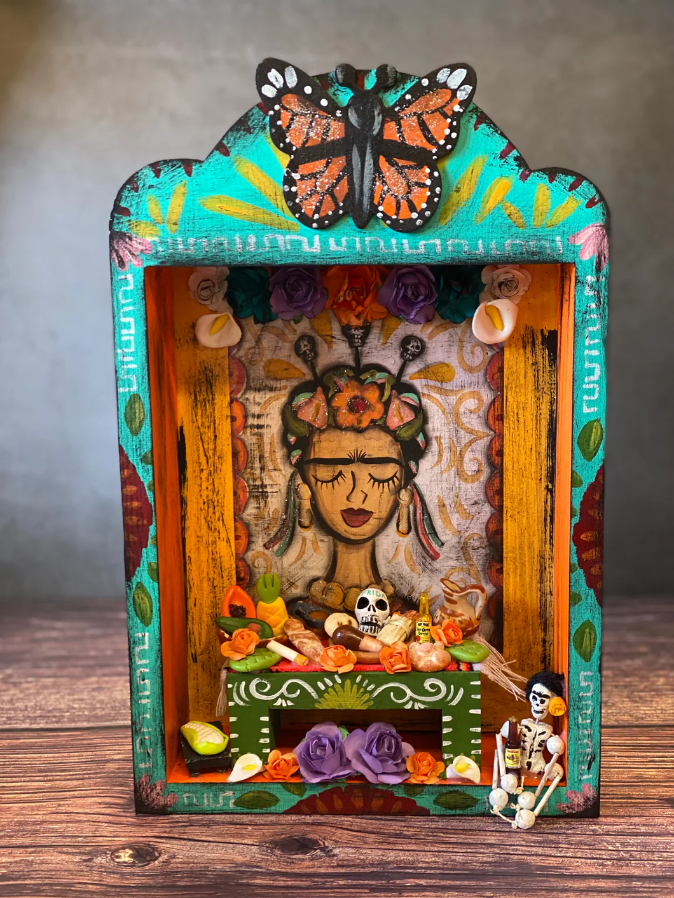
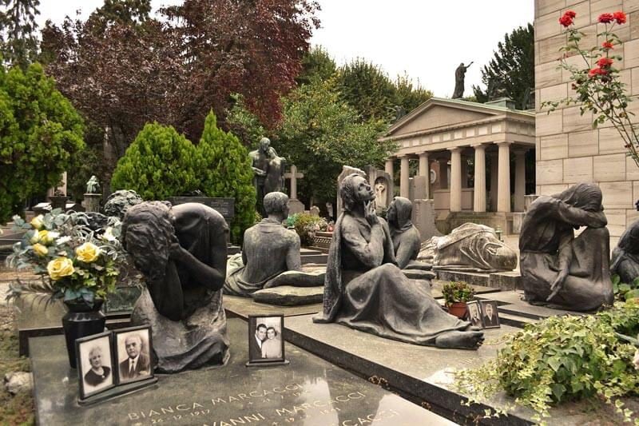

ARQUITECTURA FUNERARIA
Mausoleo Eguiguren
Estructura emblemática de estilo neoclásico en San Teodoro, destacada por sus detalles en mármol y su gran valor histórico para la región.
Ver Modelo 3D →Un museo a cielo abierto. Este archivo preserva el valor histórico y arquitectónico de los nichos y esculturas del Cementerio San Teodoro mediante digitalización por fotogrametría.
El Cementerio San Teodoro alberga un invaluable patrimonio arquitectónico y escultórico. Cada nicho y mausoleo representa una pieza fundamental del arte funerario regional que merece ser estudiada y preservada.
Este proyecto de tesis busca democratizar el acceso a nuestra historia. Mediante la digitalización por fotogrametría, logramos que estudiantes escolares, universitarios e investigadores puedan explorar estas obras a detalle desde cualquier lugar.
Estructura emblemática de estilo neoclásico en San Teodoro, destacada por sus detalles en mármol y su gran valor histórico para la región.
Ver Modelo 3D →
Lápida esculpida en piedra caliza local, un claro ejemplo de las técnicas de grabado importadas a la ciudad durante el siglo XIX.
Ver Modelo 3D →
Obra representativa de la paz y el duelo. Digitalizada en alta resolución mediante fotogrametría para su preservación y estudio.
Ver Modelo 3D →¿Posee registros familiares, fotografías o datos históricos vinculados al San Teodoro? Su contribución es vital para completar este rompecabezas histórico.
CONTACTAR CON ARCHIVÍSTICAEl Cementerio General San Teodoro se encuentra en el corazón de Piura. Puedes visitarlo para estudiar las obras de arte funerario en la siguiente dirección:
📍 Av. Vice / Calle San Teodoro, Piura, Perú.